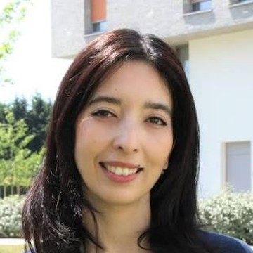
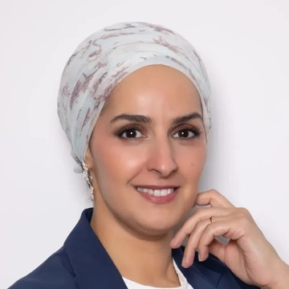

|
Bonjour,
Il y a quelque temps, vous nous avez écrit pour en savoir plus sur nos formations. Je voulais vous donner des nouvelles, car la prochaine session approche.
Le samedi 12 décembre, à Paris, nous organisons notre formation en vitaminothérapie. Les places sont limitées, et elles partent vite.
Pourquoi maintenant ?
Vos patients en parlent. Ils ont vu les perfusions de vitamines sur les réseaux, certains en ont déjà fait une, et ils vous demandent votre avis. La vitaminothérapie est en plein essor, mais c'est un acte médical qui demande de la rigueur. Bien formé, vous pouvez y répondre avec assurance, et en toute sécurité.
Ce que vous saurez faire à la fin de la formation
- Poser les bonnes indications, et savoir quand dire non (contre-indications)
- Réaliser le bilan préalable et l'interpréter au-delà des normes du laboratoire
- Choisir les bons produits et les bons dosages
- Prévenir, reconnaître et gérer les complications
- Exercer dans un cadre juridique clair
Comme l'écrit le Dr Miftah : « Je repars en sachant concrètement quoi faire et comment le mettre en pratique, sans me sentir perdue. »
Au programme
| 01Vitamines et oligo-éléments |
|
02Études scientifiques |
| 03Indications et contre-indications | |
04Anamnèse et prise de sang |
| 05Protocoles | |
06Aspects légaux |
| 07Cas pratiques | |
08Atelier pratique (1 h) |
Vos intervenants
|
Dr Jean-Louis Pestiaux
Gynécologue, médecin fonctionnel |

Dr Imène El Mourabit
Médecin urgentiste et esthétique |

Safaa Aoussar
Infirmière urgentiste, fondatrice |
Maître Luiza Gabour
Avocate en droit de la santé |
Ce qui fait la différence chez Vitamedical Academy
- Des médecins formateurs. Vous apprenez avec des praticiens qui exercent.
- Des juristes et des experts à vos côtés, pour pratiquer dans un cadre sûr.
- Médecins et infirmiers(ères) formés ensemble, pour parler le même langage et construire des prises en charge cohérentes.
- Une formation qui ne s'arrête pas le 12 décembre. Vous intégrez notre communauté de soignants, et notre équipe reste disponible pour vos questions sur vos premiers cas.
Vous ne repartez pas seulement avec un certificat. Vous repartez avec nos protocoles et le syllabus complet, prêt à exercer, et entouré.
Ce qu'ils en disent
★★★★★
« Je me forme très régulièrement, mais cela faisait longtemps que je n'avais pas suivi une formation aussi aboutie ! Des intervenants de grande qualité, des explications claires et un vrai accompagnement. Je repars en sachant concrètement quoi faire et comment le mettre en pratique, sans me sentir perdue. Je recommande à 100 %, avec une conviction que j'ai rarement à la sortie d'une formation. »
Dr Nora Miftah, avis Google
▶ |
Découvrez la formation en vidéo Cliquez ici pour visualiser la formation sur Instagram |
Infos pratiques
| Date | Samedi 12 décembre, de 9 h 00 à 17 h 30
Accueil avec petit-déjeuner |
| Lieu | Paris (l'adresse exacte vous sera communiquée à l'inscription) |
| Public | Médecins et infirmiers(ères) |
| Tarif | 1 300 € HTVA |
| Inclus | La journée de formation, le petit-déjeuner d'accueil et le repas de midi, les protocoles et le syllabus à emporter, et l'accompagnement après la session au sein de notre communauté |
Une question avant de vous inscrire ? Répondez simplement à ce message : je vous réponds personnellement.
Au plaisir de vous accueillir à Paris,
Safaa Aoussar
P.S. Les places sont limitées pour garder une vraie proximité avec les formateurs. Si vous hésitez, n'attendez pas trop pour réserver la vôtre.
|